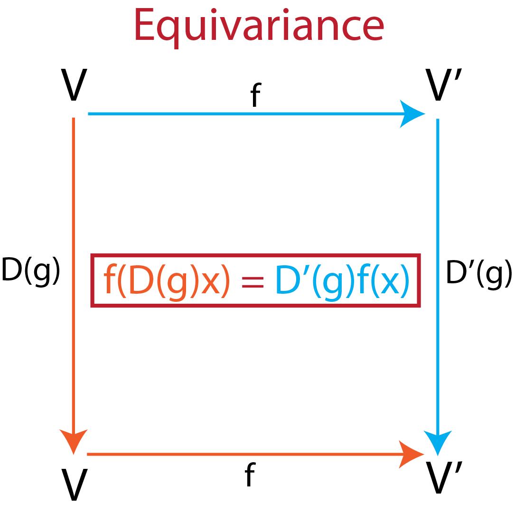

Equivariance and Polynomials
Contents
Equivariance and Polynomials#
In this section we will define what it means for a function to be equivariant, and what tools are available to create equivariant polynomials. This latter is of great importance as almost any functions can be approximated by polynomials, and that the role of our neural network is to estimate an (equivariant) function.
Equivariance#
We say that a function \(f: V \rightarrow V'\) is equivariant to the action of the symmetry element \(g\), represented by \(D(g)\) on it’s input \(x\), if it gives rise to a similar action \(D'(g)\) of its output, i.e:
This principle is illustrated in figure 1.
For a concreate example, consider a 3D rotation of \(\theta\) degrees around the x axis:
and the following functions function:
Then \(f\) is equivariant to rotation as:
especialy in this case the function is actually invariant to rotations: \(R'_x(\theta) =1 \space \forall \theta \in \mathcal{R}\).
An example of a non equivariant polynomials would be \(p\):
 |
|---|
Fig.1 - Principle of equivariance. |
Equivariant polynomials#
In this section we will discuss the tools to create equivariant polynomials.
We will first show that the compositon of 2 equivariant polynomial is equivariant:
Consider two equivariant function:
then:
Addition of equivariant polynomials is equivariant:#
Indeed, \(f+g\) is equivariant as:
Composition of equivariant polynomials is equivariant:#
Indeed, \(f \circ g\) is equivariant as:
The Tensor Product of two polynomial is equivariant:#
It is denoted \(f \otimes g\). The Tensor Product section is dedicated to it.